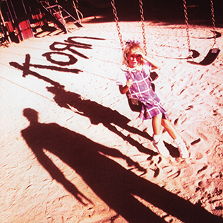

Álbuns da Banda Korn

Korn
Ano de Lançamento: 1994
Este é o primeiro álbum da banda Korn. Ele marcou o início de uma jornada musical incrível, apresentando o som único da banda e conquistando milhões de fãs em todo o mundo.
Life is Peachy
Ano de Lançamento: 1996
O segundo álbum da Korn é uma continuação do sucesso do primeiro. Com novas músicas e letras impactantes, este álbum solidificou a posição da banda no cenário musical.

Follow the Leader
Ano de Lançamento: 1998
O terceiro álbum da banda Korn trouxe inovação e experimentação. Com novos sons e colaborações, este álbum continuou a impressionar os fãs e a crítica.